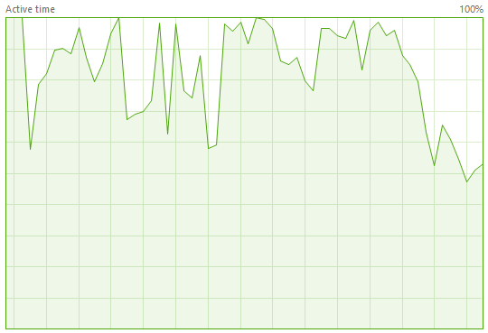

Busy Hard Drive
It is not required, but we recommend running your Unreal Environment on a Solid State Drive (SSD). Between debugging, logging, and Unreal asset loading the hard drive can become your bottle neck. It is normal that your hard drive will be slammed while Unreal is loading the environment, but if your hard drive performance looks like this while the Unreal game is running then you will probably not get a good flying experience.

In fact, if the hard drive is this busy, chances are the drone will not fly properly at all. For some unknown reason this I/O bottle neck also interferes with the drone control loop and if that loop doesn't run at a high rate (300-500 Hz) then the drone will not fly. Not surprising, the control loop inside the PX4 firmware that runs on a Pixhawk flight controller runs at 1000 Hz.
Reducing I/O
If you can't whip off to Fry's Electronics and pick up an overpriced super fast SSD this weekend, then the following steps can be taken to reduce the hard drive I/O:
- First run the Unreal Environment using Cooked content outside of the UE Editor or any debugging environment, and package the content to your fastest SSD drive. You can do that using this menu option:

- If you must use the UE editor (because you are actively modifying game assets), then at least don't run that in a debugger. If you are using Visual Studio use start without debugging.
- If you must debug the app, and you are using Visual Studio debugger, stop then Visual Studio from
logging Intellitrace information.
Go to Tools/Options/Debugging/Intellitrace, and turn off the main checkbox. - Turn off any Unreal Analytics that your environment may have enabled, especially any file logging.
I/O from Page Faults
If your system is running out of RAM it may start paging memory to disk. If your operating system has enabled paging to disk, make sure it is paging to your fastest SSD. Or if you have enough RAM disable paging all together. In fact, if you disable paging and the game stops working you will know for sure you are running out of RAM.
Obviously, shutting down any other unnecessary apps should also free up memory so you don't run out.
Ideal Runtime performance
This is what my slow hard drive looks like when flying from UE editor. You can see it's very busy, but the drone still flies ok:

This is what my fast SSD looks like when the drone is flying in an Unreal Cooked app (no UE editor, no debugger). Not surprisingly it is flying perfectly in this case: